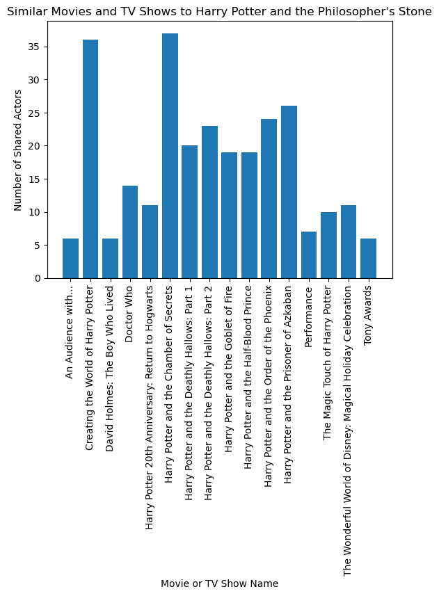
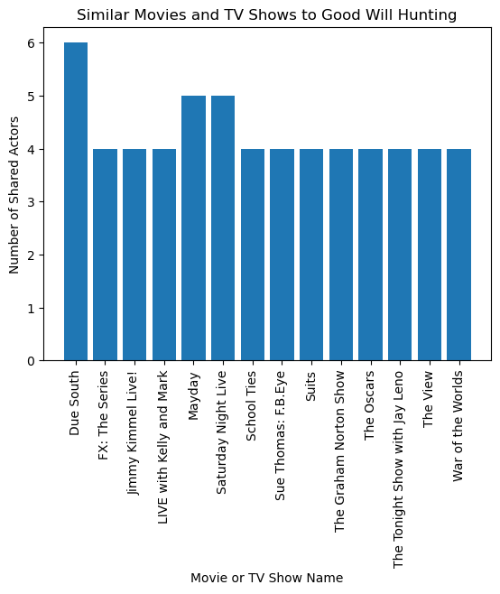

import scrapy
class TmdbSpider(scrapy.Spider):
'''
This class is for a spider that scrapes a movie website from TMDB and finds other
movies and TV shows that have similar actors to the selected movie.
'''
name = 'tmdb_spider'
def __init__(self, subdir=None, *args, **kwargs):
self.start_urls = [f"https://www.themoviedb.org/movie/{subdir}/"]Step 1: Initializing the Project
- We first go into the PIC16B-24W environment by running the following line in the terminal:
conda activate PIC16B-24W
- In order to start the scrapy project, we first set the working directory into the folder that we want to work in, which for me was my PIC 16B Homework 2 folder. To do this, run this in the terminal:
cd your_desired_working_directory
cd /Users/trentbellinger/Desktop/PIC16B/Homework/Homework2 (for me)
- We then start the scrapy project, named TMDB_scraper. This will create a TMDB_scraper folder in the current working directory established above. To do this, run this in the terminal:
scrapy startproject TMDB_scraper
- Now change the directory to be the TMDB_scraper folder by running this in the terminal:
cd TMDB_scraper
- After the project is set up, navigate to the file settings.py (TMDB_scraper -> TMDB_scraper -> settings.py). Add the following line to the file (this ensures we do not load in too much data in our preliminary testing of the scraper).
CLOSESPIDER_PAGECOUNT = 20
- We now have to set up a user agent to grant the spider access to the TMDB site, which we do by adding the following line to the settings.py file (without this line, the scraper will run into 403 errors and will not be able to run).
USER_AGENT = ‘Mozilla/5.0 (iPad; CPU OS 12_2 like Mac OS X) AppleWebKit/605.1.15 (KHTML, like Gecko) Mobile/15E148’
- This concludes the initialization process of the scraper.
Step 2: Writing the TmdbSpider Class:
- The goal of this class is to create a spider that scrapes a movie website from TMDB and finds other movies and TV shows that have similar actors to the selected movie.
- To write this class, navigate to the spiders folder (TMDB_scpraper -> TMDB_scraper -> spiders) and create a file called tmdb_spider.py inside of it. All of the following code should be written in this file.
Step 2(a): Class Initialization
- The first code that we write in this file is the class initialization, which is shown below.
- As we can see, the class is initialized with global variable name=‘tmdb_spider’. The variables subdir, *args, and **kwargs are passed into the initialization of the class. The subdir instance variable is the subdirectory of the movie that we want to scrape data from on the TMDB website. We then initialize the instance variable start_urls which contains the url of the movie that we want to scrape data from.
Step 2(b): The parse() Method
- We now move on to creating the parsing methods for the scraper.
- The first of these methods is the parse method. This method assumes that we are on the selected movie’s TMDB page and navigates the spider to the Full Cast & Crew page. Once on this page, we call the parse_full_credits method, which will be defined later.
- The code for the parse method is below.
def parse(self, response):
'''
Yields the cast page of the selected movie and calls the parse_full_credits
method.
'''
# go the the cast page of the selected movie and call the parse_full_credits method
cast_url = f"{self.start_urls[0]}cast"
yield scrapy.Request(cast_url, callback = self.parse_full_credits)Step 2(c): The parse_full_credits() Method
- The parse_full_credits method assumes that we are on the selected movie’s Full Cast & Crew page on TMDB. It yields a scrapy request for each actor listed on the page (crew members are excluded). When each actor’s request is yielded, we call the parse_actor_page method, which will be defined later.
- To accomplish this, we must first find a list of all the actor’s URLs on the page and then loop through this list and yield the URL to each actor’s page on TMDB.
- The code for this method is below.
def parse_full_credits(self, response):
'''
Starts at the cast page for the selected movie and yields requests for the
TMDB page of each actor on the cast page (excluding crew members), calling
the parse_actor_page method.
'''
# get all the links for the actors on the cast page of the movie
actors_css = 'ol.people.credits:not(.crew) li div.info a::attr(href)'
actors = response.css(actors_css).extract()
# loop through the actor links on the page, excluding crew members
for actor_link in actors:
# join the actor url with the response url
url = response.urljoin(actor_link)
# create a request using the above url and call the parse_actor_page method
yield scrapy.Request(url, callback = self.parse_actor_page)Step 2(d): The parse_actor_page() Method
- The parse_actor_page method assumes that we are on the TMDB page for an actor. The method yields a dictionary of the form {“actor” : actor_name, “movie_or_TV_name” : movie_or_TV_name} for each acting role that the actor has had in their career (non-acting roles are excluded).
- To accomplish this, we first find the actor’s name on the actor’s TMDB page. We then need to loop through the different credits tables on the page and find the one that contains only the acting roles. We then create a selector for this table, loop through the entries of the table, and yield a dictionary of the actor’s name and the role for each role in the table.
- The code for this method is below.
def parse_actor_page(self, response):
'''
Starts on the TMDB page of an actor and yields a dictionary containing the
actor's name and the movie or TV show for each of their acting roles.
'''
# get the actor's name from their page
actor_name = response.css('h2.title a::text').get().strip()
# loop through the types of credit lists on the page
for item in response.css('div.credits_list h3'):
# if the credit list is for acting
if 'Acting' in item.xpath('./text()').get():
# get the table of acting roles
acting_table = item.xpath('following-sibling::table[1]').get()
# create a selector for the table of acting roles
acting_selector = scrapy.Selector(text = acting_table)
# loop through the table of acting roles
for acting in acting_selector.css('table.credit_group tr'):
# get the movie or TV show name from the current acting role
movie_or_TV_name = acting.css('td.role a.tooltip bdi::text').get().strip()
yield {"actor": actor_name, "movie_or_TV_name": movie_or_TV_name}- We now have a fully functional web spraper that yields various dictionaries for each acting role of each actor in the selected movie.
IMPORTANT NOTE: the methods parse, parse_full_credits, and parse_actor_page are defined within the TmdbSpider class initialized in part 2(a)
Step 3: Testing the Scraper
- We will now show two different tests that were performed on two different movies using the scraper.
- Before doing these tests, we must comment out the CLOSESPIDER_PAGECOUNT = 20 line in the settings.py file to allow the whole website to be scraped for each of the movies.
Test 1: Harry Potter and the Philosopher’s Stone
- The goal of this test is to create a .csv file that contains all of the {actor:role} pairs that are yielded by our TmdbSpider class for the movie Harry Potter and the Philosopher’s Stone.
- This was accomplished by running the follwing line in the terminal, while still in the same TMDB_scraper directory as in step 1.
scrapy crawl tmdb_spider -o results1.csv -a subdir=671-harry-potter-and-the-philosopher-s-stone
- After this line is run, a results1.csv file will be created in the TMDB_scraper folder.
- We need to make sure this file is of the correct format, which is done below.
import pandas as pd
results1 = pd.read_csv("results1.csv")
results1| actor | movie_or_TV_name | |
|---|---|---|
| 0 | Daniel Radcliffe | Have I Got a Bit More News for You |
| 1 | Daniel Radcliffe | David Holmes: The Boy Who Lived |
| 2 | Daniel Radcliffe | 100 Years of Warner Bros. |
| 3 | Daniel Radcliffe | Mulligan |
| 4 | Daniel Radcliffe | Digman! |
| ... | ... | ... |
| 2952 | James Phelps | Kingdom |
| 2953 | James Phelps | Harry Potter and the Goblet of Fire |
| 2954 | James Phelps | Harry Potter and the Prisoner of Azkaban |
| 2955 | James Phelps | Harry Potter and the Chamber of Secrets |
| 2956 | James Phelps | Harry Potter and the Philosopher's Stone |
2957 rows × 2 columns
- We can se that the results1.csv file is in the correct format, with one column for actor name and one column for the movie or TV show they acted in. There are 2957 observations.
- We will now check is our dataset contains only the actors in the movie (i.e. it excludes the crew members).
results1['actor'].nunique()63- Here, we see that there are 63 total actors in the dataset. When viewing the TMDB webpage for the movie, there are exactly 63 actors in the movie, so our scraper successfully weeded out the crew members and only included the actors.
- We will now check that each actor is only in the dataset for their acting roles (not their roles in production, directing, etc.). We use Daniel Radcliffe as our test.
results1.groupby('actor').size()['Daniel Radcliffe']97- We can see here that the actor Daniel Radcliffe is found 97 times in the dataset, meaning that he should have 97 acting roles in his career. When viewing the TMD webpage for Daniel Radcliffe, he does in fact have exactly 97 acting roles, so our scraper has successfully weeded out non-acting roles for each actor.
- Our scraper has worked as expected, so our test is successul.
Test 2: Good Will Hunting
- We will now test the scraper on my favorite movie, Good Will Hunting.
- The goal of this test is to create a .csv file that contains all of the {actor:role} pairs that are yielded by our TmdbSpider class for the movie Good Will Hunting.
- This was accomplished by running the follwing line in the terminal, while still in the same TMDB_scraper directory as in step 1.
scrapy crawl tmdb_spider -o results2.csv -a subdir=489-good-will-hunting
- After this line is run, a results2.csv file is created in the TMDB_scraper folder.
- We just need to make sure this file is of the correct format, which is done below.
results2 = pd.read_csv("results2.csv")
results2| actor | movie_or_TV_name | |
|---|---|---|
| 0 | Christian Harmony | The Doorway |
| 1 | Christian Harmony | Sex and the City |
| 2 | Christian Harmony | Good Will Hunting |
| 3 | Stephen L'Heureux | Good Will Hunting |
| 4 | Stephen L'Heureux | Scent of a Woman |
| ... | ... | ... |
| 1500 | Casey Affleck | LIVE with Kelly and Mark |
| 1501 | Casey Affleck | Lemon Sky |
| 1502 | Casey Affleck | Saturday Night Live |
| 1503 | Matt Mercier | Good Will Hunting |
| 1504 | Rachel Majorowski | Good Will Hunting |
1505 rows × 2 columns
- We can se that the results2.csv file is in the correct format, with one column for actor name and one column for the movie or TV show they acted in. There are 1505 observations.
- We will now check is our dataset contains only the actors in the movie (i.e it excludes the crew members).
results2['actor'].nunique()49- Here, we see that there are 49 total actors in the dataset. When viewing the TMDB webpage for the movie, there are exactly 49 actors in the movie, so our scraper successfully weeded out the crew members and only included the actors.
- We will now check that each actor is only in the dataset for their acting roles, and not their roles in production, directing, etc. We use Matt Damon as our test.
results2.groupby('actor').size()['Matt Damon']163- We can see here that the actor Matt Damon is found 163 times in the dataset, meaning that he should have 163 acting roles in his career. When viewing the TMD webpage for Matt Damon, he does in fact have exactly 163 acting roles, so our scraper has successfully weeded out non-acting roles for each actor.
- Our scraper has worked as expected, so our test is successul.
Step 4: Making Recommendations
- We will now make recommendations for other TV shows and movies. This will be done by creating a Pandas dataframe to show the movies and TV shows that share the most actors with the selected movie or TV show.
- We want to use the dataframes that our scraper creates (like the ones above) to create dataframe with two columns “movie or TV name” and “number of shared actors”. The creation of this dataframe is created in a function that is outlined below.
def recommend_dataframe(df):
'''
Returns a Pandas dataframe with two columns "movie or TV name" and "number of
shared actors" when a dataframe created by our scraper is inputted.
'''
df_grouped = df.groupby("movie_or_TV_name").size()
return pd.DataFrame({"movie or TV name":df_grouped.index,
"number of shared actors":df_grouped.values})- We will also create a barplot to show the movie and TV show recommendations that we should make for each movie. A function to create this plot is outlined below.
import matplotlib.pyplot as plt
from matplotlib.gridspec import GridSpec
def recommend_barplot(df, movie, min_num_shared_actors):
'''
Returns a matplotlib.pyplot barplot of the number of shared actors in each
movie with at least min_num_shared_actors of the selected movie using the
data found in df.
Arguments:
df (Pandas dataframe): a dataframe with columns "movie or TV name" and
"number of shared actors"
movie (str): a string of the movie we are using
min_num_shared_actors (int): an integer representing the minimum number of
shared actors a movie or TV show must have to be
presented in the plot
Returns:
A matplotlib.pyplot barplot with the bar height the number of shared actors and
the x-axis being the movies we are considering.
'''
# subset the dataset by movies or tv shows having over min_num_shared_actors
df_plot = df.loc[df["number of shared actors"] > min_num_shared_actors,:]
# take out the current movie observation from the dataset
df_plot = df_plot.loc[df_plot["movie or TV name"] != movie,:]
# create a bar plot showing the most similar movies and TV shows
plt.bar(df_plot["movie or TV name"], df_plot["number of shared actors"])
plt.xticks(rotation = 90)
plt.ylabel("Number of Shared Actors")
plt.xlabel("Movie or TV Show Name")
plt.title(f"Similar Movies and TV Shows to {movie}")
plt.show()Recommendations for Harry Potter and the Philosopher’s Stone
- Using the results1.csv dataframe imported above, we create a dataframe with two columns “movie or TV name” and “number of shared actors” using the recommend_dataframe() function.
recommendations1 = recommend_dataframe(results1)
recommendations1| movie or TV name | number of shared actors | |
|---|---|---|
| 0 | (K)nox: The Rob Knox Story | 4 |
| 1 | 10 Days to War | 1 |
| 2 | 10 Rillington Place | 1 |
| 3 | 100 Years of Warner Bros. | 1 |
| 4 | 13Hrs | 1 |
| ... | ... | ... |
| 2270 | Your Christmas or Mine 2 | 1 |
| 2271 | Your Christmas or Mine? | 1 |
| 2272 | Your Ticket Is No Longer Valid | 1 |
| 2273 | Yub-Nub! The Forgotten Ewok Adventures | 1 |
| 2274 | Zastrozzi: A Romance | 1 |
2275 rows × 2 columns
- We can see that our function works in creating the dataframe with the two desired columns.
- We will now sort by movies or tv shows that have more than 5 shared actors with Harry Potter and the Philosopher’s Stone.
recommendations1.loc[recommendations1["number of shared actors"] > 5,:]| movie or TV name | number of shared actors | |
|---|---|---|
| 116 | An Audience with... | 6 |
| 382 | Creating the World of Harry Potter | 36 |
| 415 | David Holmes: The Boy Who Lived | 6 |
| 455 | Doctor Who | 14 |
| 693 | Harry Potter 20th Anniversary: Return to Hogwarts | 11 |
| 694 | Harry Potter and the Chamber of Secrets | 37 |
| 695 | Harry Potter and the Deathly Hallows: Part 1 | 20 |
| 696 | Harry Potter and the Deathly Hallows: Part 2 | 23 |
| 697 | Harry Potter and the Goblet of Fire | 19 |
| 698 | Harry Potter and the Half-Blood Prince | 19 |
| 699 | Harry Potter and the Order of the Phoenix | 24 |
| 700 | Harry Potter and the Philosopher's Stone | 63 |
| 701 | Harry Potter and the Prisoner of Azkaban | 26 |
| 1241 | Performance | 7 |
| 1839 | The Magic Touch of Harry Potter | 10 |
| 2050 | The Wonderful World of Disney: Magical Holiday... | 11 |
| 2101 | Tony Awards | 6 |
- We can see that there are 16 movies and TV shows that have more than 5 shared actors with Harry Potter and the Philosopher’s Stone.
- We would reccomend these movies to people who enjoy Harry Potter and the Philosopher’s Stone because the actors are very similar (more than 5 matches).
- We will now use the recommend_barplot() function to visualize the data presented above.
recommend_barplot(df = recommendations1,
movie = "Harry Potter and the Philosopher's Stone",
min_num_shared_actors = 5)
- From the bar plot above, we can see that the movies or TV shows that share the most actors with Harry Potter and the Philosopher’s Stone are “Harry Potter and the Chamber of Secrets” and “Creating the World of Harry Potter.” This makes sense because all of the Harry Potter movies share many actors.
Recommendations for Good Will Hunting
- Using the results2.csv dataframe imported above, I will create a dataframe with two columns “movie or TV name” and “number of shared actors” using the recommend_dataframe() function.
recommendations2 = recommend_dataframe(results2)
recommendations2| movie or TV name | number of shared actors | |
|---|---|---|
| 0 | 'Saving Private Ryan': Boot Camp | 1 |
| 1 | ...First Do No Harm | 1 |
| 2 | 10-8: Officers on Duty | 1 |
| 3 | 11 Colours of the Bird | 1 |
| 4 | 12 Dates of Christmas | 1 |
| ... | ... | ... |
| 1275 | Zerophilia | 1 |
| 1276 | eXistenZ | 1 |
| 1277 | mid90s | 1 |
| 1278 | Åke and His World | 1 |
| 1279 | 알아두면 쓸데없는 지구별 잡학사전 | 1 |
1280 rows × 2 columns
- We can again see that our function works in creating the dataframe with the two desired columns.
- We will now sort by movies or tv shows that have more than 3 shared actors with Good Will Hunting.
recommendations2.loc[recommendations2["number of shared actors"] > 3,:]| movie or TV name | number of shared actors | |
|---|---|---|
| 285 | Due South | 6 |
| 316 | FX: The Series | 4 |
| 394 | Good Will Hunting | 49 |
| 512 | Jimmy Kimmel Live! | 4 |
| 541 | LIVE with Kelly and Mark | 4 |
| 606 | Mayday | 5 |
| 803 | Saturday Night Live | 5 |
| 812 | School Ties | 4 |
| 885 | Sue Thomas: F.B.Eye | 4 |
| 888 | Suits | 4 |
| 1003 | The Graham Norton Show | 4 |
| 1071 | The Oscars | 4 |
| 1131 | The Tonight Show with Jay Leno | 4 |
| 1140 | The View | 4 |
| 1228 | War of the Worlds | 4 |
- We can see that there are 14 movies and TV shows that have more than 3 shared actors with Good Will Hunting.
- I would reccomend these movies to people who enjoy Good Will Hunting because the actors are very similar (more than 3 matches).
- We will now use the recommend_barplot() function to visualize the data presented above.
recommend_barplot(df = recommendations2,
movie = "Good Will Hunting",
min_num_shared_actors = 3)
- From the bar plot above, we can see that the movies or TV shows that share the most actors with Good Will Hunting are “Due South”, “Mayday”, and “Saturday Night Live”. We would recommend these shows the most to Good Will Hunting fans.